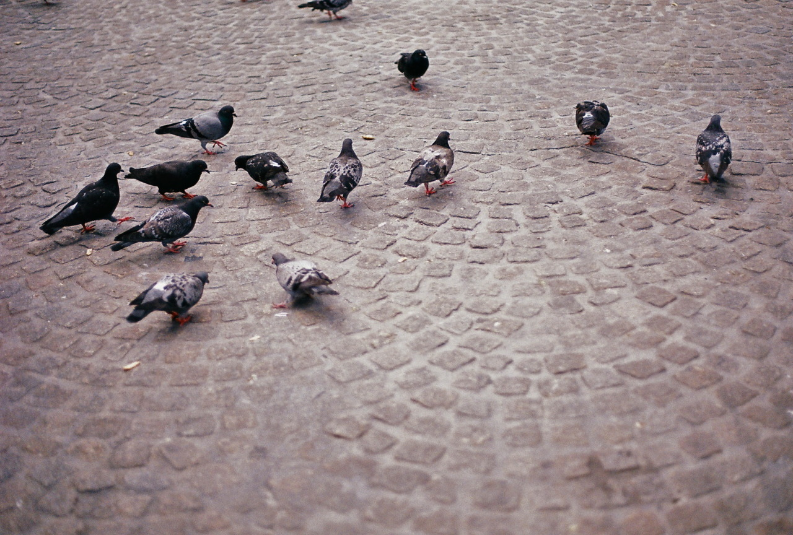

this blog, as i wrote here and here is something that i am slowly aiming to return to, and more carefully tend to. i haven’t had a regular blog in years, choosing instead to write long emails to friends, family, and other loved ones. these days, i don’t write as many long emails, but i still believe that a regular writing & reflection practice is important, perhaps as opposed to (or perhaps just in parallel) to the kind of sporatic note-taking and sparks of inspiration i tend to add to my digital garden or are.na. while i may use or feed into a platform like substack or medium in the future, for now i just like putting these small posts out into the world.
a friend recently ask if i could have some kind of subscription form, to make it easier for folks to be alerted when there are updates to this blog, so that they could respond by email or add comments. i’m not sure how i’ll manage these subscriptions yet, but i’ll make sure you get alerted when there are updates to this blog:
enjoy! if you have any questions, suggestions, or reflections of your own, please feel free to send me an email at aleesteele@gmail.com
-
2024-11-01
elegies for oil spills (and other poetic tactics)
For the past year, Mirko Febbo and I have been collaborating on works that take our interests in extraction industries and supply chains out of classrooms and into the world. The aim was simple: to develop means of translating these topics into more accessible and engaging mediums that go beyond text and data to immersive experiences, ultimately translating this tacit knowledge into tangible formats. 2024 was a year of experimentation, following the principles I had written about at the beginning of the year.
-
2024-08-15
formalising the turing way's governance (a two year review)
Note: I recently wrote this document about formalising working groups for governance with The Turing Way for a former colleague and friend Gracielle Higino’s lab meeting for her course Computational Biodiversity Science and Services (BIOS2). They were going through a similar process with their group, and while I wasn’t able to attend the meeting, I drafted a short summary of the process of creating working groups. In the time since, I’ve expanded it into this broader blog, expanded to account for the different stages of governance that I’ve gone through alongside The Turing Way community.
-
2024-03-20
solidarity infrastructures blog
30.03.24: This blog was originally posted on the course website for Infrastructure Solidarities, a course at School for Poetic Computation that I took from January through March 2024.
-
2024-01-05
guiding principles for 2024
15.01.2024: I recently sent this over to a friend - and realised that this might be something since to post here as well!
-
2023-11-14
starting the artists way -- practices for nurturing creativity
14.11.23: Sent to a friend, who had asked about practices that help with my own creativity. I recently started The Artist’s Way course, which has changed many of my ingrained ways of thinking and practices.
-
2023-08-05
reviewing one year with The Turing Way
Wow, my year-long mark with The Turing Way has come and gone. It’s hard to believe that it’s already been more than a year (actually perhaps closer to two)!
-
2023-07-12
openstreetmap reflections so far
I recently joined the Humanitarian OpenStreetMap Team in modering their Community Working Group and Tech Working Group’s discussions on AI-Assisted Mapping.
-
2023-04-12
reflections on my open journey (so far)
This past year, I’ve had the privilege of reflecting on the experiences that brought me into the “open ecosystem” in a few keynotes talks and shared discussions. Somehow, some folks thought that I had something to share with them about my own experiences!
-
2023-02-11
goatherding people to the poetic web
Over at the Whitaker Lab at the Alan Turing Institute, our team has a weekly “goatherd”, who ensures that people fill out a shared document, and shares tidbits and quotes throughout the week. The use of the term ‘goatherd’ as opposed to shepherd comes from a Terry Pratchet quote:
-
2022-09-23
reviewing 6 months with The Turing Way project
This was originally posted on a Github discussion, which can be found there. There may be typos in this post, as is inevitable when blogging in such an informal format! I have done my best to add edits here.
-
2022-03-13
every paper, presentation, and project i completed in grad school
I recently completed my dissertation: “Mapping crises, communities, and capitalism on OpenStreetMap”. It was a long and bumpy road, and while I’m processing a v2 version (after sending an initial copy out to everyone I spoke to)… I didn’t want to lose the forest for the trees, and forget about the whole series of processes and projects that led to this point.
-
2022-03-03
publication: omnivorous analysis - unpacking the satellite imagery supply chain
This past year, I had the privilege of working with editor Max Read on a submission for Logic Magazine, a magazine about technology. The submission was for their “Clouds” issue, featuring some incredible writers.
-
2021-10-09
the re:source project
miriam & i recently were given the opportunity to continue our collaboration at Wikimedia Deutschland’s Unlock Accelerator. It’s been a great opportunity to learn about how open knowledge works in action, and the role that tech might play in these spaces. as social scientists, we found ourselves ourselves in an unfamiliar environmental: that of product development, dominated by notions of efficiency and productivity. it’s been a challenging (but ultimately extremely fruitful!) time, and so i thought i’d post one of our status updates here.
-
2021-08-14
okf frictionless fellows program - the blog collection!
hey all!
-
2021-03-28
supply chains & us
over the past few months, my collaborator miriam matthiessen (@miriammthsn) and i have been presenting our new collaboration: supply chains and us. while this is supply we’ll be building up and revisiting in the coming months, i thought i would log some of our progress here.
-
2021-01-17
thinking and writing about openness
Dear all,
-
2020-07-26
the architecture of good intentions
During the height of the pandemic, I put together a collection of readings called the “architecture of good intentions”.
-
2020-03-09
publication: notes on the (American) Empire
Dear all,
-
2019-12-09
First Impressions: On Mountains, Panels, and Fondue
Dear all,
-
2019-09-17
Greetings from Geneva-- I'm bringing back the blog!
Dear all,
-
2019-08-16
ann douglas on why we study
04.02.2024 - Ann Douglas was a professor I had only briefly back at Columbia. She was, as this article says, the “real deal”, a brilliant scholar and kind human whose lectures made you feel glad to be alive and curious in the wild world we are in. She had fought the real fights of gender equality when she first joined the English department, and somehow stuck around ever since. She taught seminars with impossibly cool titles like “From Imperialism to Cold War” and “the Beat Generation” that had such depth and sharp commentary that could make the brain weep with joy. I had applied (and somehow gotten into) her “Film Noir” seminar in the Spring of 2013, when I decided I wanted to leave school for awhile. Before I left Morningside for what would be two years of itinerant life, I asked her (quite arrogantly in fact) about the purpose of studying, and of academia more broadly. She responded with this beautiful text, which I’ve saved in a note in my phone ever since. While I’ve lost my own email (which I’d probably be ashamed of reading now!), I’m so glad to have this snippit. It seems like a good way to start this blog, so I’ve back-dated this post for 2019: when I found this message when on my way back to graduate school.